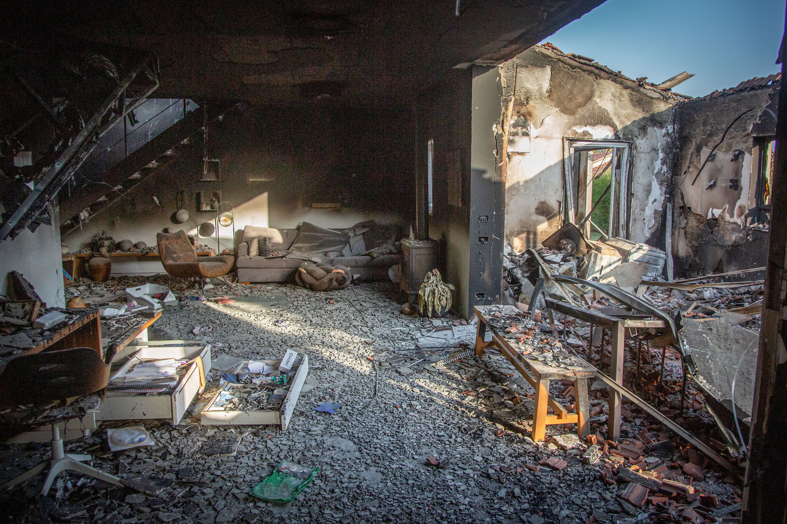
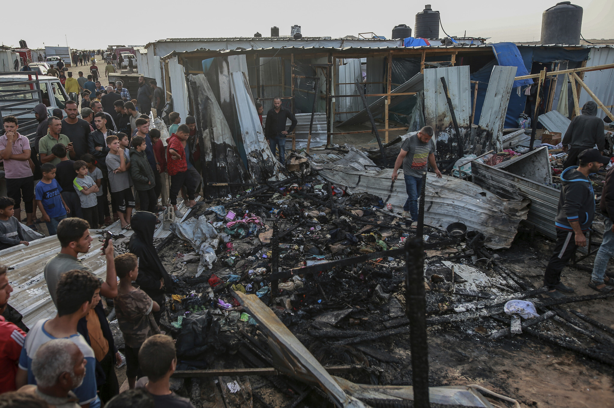
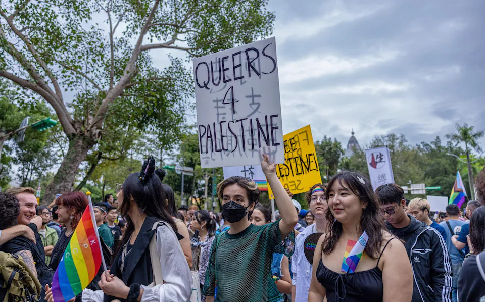

Roughly two weeks ago, Benjamin ‘Bibi’ Netanyahu spoke to the United States Congress to comment on the status of the conflict between the state of Israel and Hamas (and secondarily Hezbollah and the state of Iran). This is his second address to a joint session of Congress; on his first address in 2015, 58 Democrats skipped the speech. Now, nine years later, roughly 128 skipped the speech (making about half of each caucus absent) – some in protest (Alexandria Ocasio-Cortez) and others simply due to other conflicting arrangements (Tim Kaine). In this address, Bibi made a slew of claims about the war; some claims simply need (or are preferred with) context, while others are false and require a fact check. As a result, I have decided to provide such in a series of articles titled CFC (Context and Fact Check), which will later include studies and deconstructions of the words of other politicians and public figures; however, Bibi’s speech contains so many claims needing analysis that this CFC must be spliced into two parts. Additionally, since this part is already quite long on its own, I have added a hyperlinked table of contexts for the reader's convenience.
Table of Contents
1. Barbarism v. Civilization
2. Pearl Harbor as a Comparison to Oct. 7th
3. Bibi’s Equivocal Account of Oct. 7th
4. Context Helpful: ‘The Lions of Israel’
5. Protest Through Flag Burning
6. The Ad Hominem, ‘Gays for Gaza’
6.5. Sidetrack: These Charlatans Make the Front Page?
7. Israel as a Colonial State; Non-Sequitur Argumentation
Netanyahu addressing Congress in 2015.
1. Barbarism v. Civilization
We meet today at a crossroads of history. Our world is in upheaval. In the Middle East, Iran’s axis of terror confronts America, Israel, and our Arab friends. This is not a clash of civilizations. It’s a clash between barbarism and civilization. It’s a clash between those who glorify death and those who sanctify life.
The juxtaposition created between “barbarism and civilization” is provocative, to say the least. Such a statement is not surprising if one looks back at the October 9th statement from Israeli Defense Minister Yoav Gallant, saying that Israel is “fighting human animals.” Arguably, one cannot objectively assume that either Netanyahu or Gallant is referring to only Hamas (and likely the Houthis and Hezbollah). Sayings of this manner can radiate the impression that the Israeli government is calling the entire population of Palestine “barbaric” or sub-human; this is further driven by the lack of sympathy towards the Palestinian civilian casualties throughout this address to Congress and other statements from Israeli officials. For example, Al Arabiya (a Saudi state-owned news channel) reported on October 11th that Gallant said
Gaza won't return to what it was before. We will eliminate everything.
Nevertheless, let us continue with the wishful assumption that Netanyahu is classifying Hamas and co. as barbarism and Israel as civilization.
2. Pearl Harbor as a Comparison to Oct. 7th
Ladies and gentlemen, like December 7th, 1941, and September 11th, 2001, October 7th is a day that will forever live in infamy.
The attack on Pearl Harbor. Keystone/Getty Images
For context (since the date of this event is not as commonly remembered as 9/11), December 7th, 1941, was the day the Imperial Japanese Navy attacked the Hawaii Pearl Harbor naval base. I assume he chose these America-centric tragedies to send a message of empathy. Still, I feel that it is odd not to reference any tragedies that have occurred adjacent to Israel. For example, he could have cited the 5th of September 1972, which was the day the Munich Olympics* massacre began/mainly took place; such would be a wildly more relevant reference considering the Paris Olympics are currently happening (at the time of his speech). Maybe I’m being a bit too critical.
*If not aware, the Munich Olympics massacre refers to the terror attack that took place during the 1972 Summer Olympics in Munich, where members of the Palestinian militant Black September organization initially killed two Israeli athletes and took nine other Israeli athletes and coaches hostage. Those nine hostages were killed early into the next day after a failed rescue attempt by West German police.
3. Bibi’s Equivocal Account of Oct. 7th
The rubble after Hamas' attack on Kibbutz Be’eri. Edi Israel/Flash90
It was the Jewish holiday of Simchat Torah. It began as a perfect day. Not a cloud in the sky. Thousands of young Israelis were celebrating at an outdoor music festival. And suddenly, at 6:29 a.m., as children were still sleeping soundly in their beds in the towns and kibbutzim next to Gaza, suddenly heaven turned into hell. Three thousand Hamas terrorists stormed into Israel. They butchered 1,200 people from 41 countries, including 39 Americans. Proportionately, compared to our population size, that’s like 20 9/11s in one day. And these monsters, they raped women, they beheaded men, they burnt babies alive, they killed parents in front of their children and children in front of their parents. They dragged 255 people, both living and dead, into the dark dungeons of Gaza.
Netanyahu uses fairly good imagery here to describe the early hours of October 7th. It is a shame that the words that follow are, at best, missing context and, at worst, deliberately false.
I do understand comparing October 7th to 9/11, as both were terror attacks. It seems that just as the United States was pushed by lies about WMDs to enter Iraq, the Israeli government has spread unverified or exaggerated claims to justify its actions in Gaza. Claims of Hamas beheading babies have been widespread, but there is no proof nor an airtight alibi that proves such happened. This claim has been echoed dozens of times in American politics, from Ted Cruz's mouth to Joe Biden's. Is it odd to expect the public release of proof for the “beheading babies” claim when it seems the public was immediately given evidence for their claims of Hamas burning babies (Israel’s official social media accounts have posted photos of charred babies many times)? However, there have been many pictures posted online after Israel’s late May strike on a Rafah displacement camp depicting the carnage that occurred toward innocent civilians. Alas, I guess there are no tears for beheaded Palestinian babies (link is not graphic).
The aftermath of the May 27, 2024 strike on a Rafah displacement camp. AP Photo/Jehad Alshrafi
Of course, Israel continued with their strike and Rafah offense despite an enormous amount of United Nations officials and international entities warning against doing so in fear of excessive civilian casualties and breaches of international humanitarian law. This does make sense, considering the close allyship between Israel and the United States and the United States’ ignorance of international law – but that’s a different topic for a different day, as I fear I am getting tangential.
Next, according to the United Nations investigation, it is incredibly likely that sexual violence occurred on October 7th, and such was unbelievably inhumane and distressing. In this, Netanyahu is telling the truth. I do believe a bit more context would be helpful, in any case. In February, the UN also condemned Israel for “egregious human rights violations” against Palestinian women. These violations include various credible claims of cruel treatment in detention centers, which include threats and occurrences of sexual abuse (including other violations specifically against children, specifically outlined in their June report on children and armed conflict). Now, in August, non-profit organization B'Tselem has created a report titled 'Welcome to Hell', which speaks on the "testimonies from 55 Palestinians held [in Israeli custody after October 7th] and released, almost all with no charges." Its findings are troubling, as these collected attestations reveal withholding of medication and medical treatment, prohibiting communal prayer, humiliation by sexual assault, and a plethora of other disgustingly cruel human rights violations that constitute torture. Again, the allyship of the United States and Israel makes a bit more sense when considering this and the United States' flagrant torture towards its detainees at Guantanamo Bay (and, in the past, Abu Ghraib). Nevertheless, I must be clear – this does not excuse, justify, or ‘cancel out’ the sexual assault committed by Hamas. I am, though, disgusted by the ‘holier-than-thou’ demeanor Netanyahu takes when condemning cruel acts by Hamas but failing to address the wrongs of the Israeli government.
4. Context Helpful: ‘The Lions of Israel’
Israel has already brought home 135 of these hostages, including seven who were freed in daring rescue operations. As the Bible says, “עם כלביא יקום” —they shall rise like lions. They’ve risen like lions, the lions of Judah, the lions of Israel.
This quote is from the 23rd chapter of the Book of Numbers, which falls in the Torah. The entire verse is (in the NIV translation):
The people rise like a lioness; they rouse themselves like a lion that does not rest till it devours its prey and drinks the blood of its victims.
Gustav Jäger's 1836 painting titled Balaam and the Angel.
To add more context, in the Bible, Balaam said this verse to Balak; Balaam was a prophet who spoke the word of the Lord to Balak, a king of Moab (modern-day South Jordan). Balak wished for Balaam to curse the migrating nation of Israel, but he instead did the opposite – blessing Israel and saying the quote above (along with a few other oracles) to the king. In the 25th chapter, though, it seemed that the Israelites “began to indulge in sexual immorality with the daughters of Moab” and worshipped “Baal of Peor,” a Moabite deity. Then, in verse 4, it is written:
Then the LORD said to Moses, “Take all the leaders of the people and execute them in broad daylight before the LORD, so that His fierce anger may turn away from Israel.
After this command, a man named Phinehas caught a fellow Israelite engaged with a Midianite woman (the land of Midian was near Moab, and both nations worshipped Baal of Peor) and drove a spear through them both. The Lord then issued a command to kill the Midianites with the reason that the influence of Peor worship and the woman that was killed were forms of ‘seduction’ used against the Israelite population. This vengeance on the Midianites is continued in the 31st chapter, but somewhat randomly, the 8th verse says that Balaam was killed in this mission. After this attack, Moses angrily addressed the commanders of their army because they had spared every woman. In response to this, Moses tells them:
Look, these women caused the sons of Israel, through the counsel of Balaam, to turn unfaithfully against the LORD at Peor so that the plague struck the congregation of the LORD. So now, kill all the boys, as well as every woman who has had relations with a man, but spare for yourselves every girl who has never had relations with a man.
This now makes Balaam’s morality and faithfulness to God dubious – from the progression of these chapters, it is a bit ambiguous what occurred, but it is ultimately stated in a reference to Balaam in the book of Revelation that since he was unable to curse the Israelites, he instead told Balak how to “entice the Israelites to sin” through idol worship and sexual immorality.
Overall, though Balaam’s words that Netanyahu quoted seemed to be spoken in the form of a vessel for the Lord, he could have chosen a better quote from a less morally unreliable figure. I guess this section is also a bit of a treat for my Christian and theology-interested readers.
5. Protest Through Flag Burning
They refuse to make the simple distinction between those who target terrorists and those who target civilians, between the democratic State of Israel and the terrorist thugs of Hamas. We recently learned from the U.S. Director of National Intelligence that Iran is funding and promoting anti-Israel protests in America. They want to disrupt America. So, these protesters burned American flags even on the 4th of July. And I wish to salute the fraternity brothers at the University of North Carolina who protected the American flag, protected the American flag against these anti-Israel protesters.
Pro-Palestinian demonstrators burning a U.S. flag in front of the U.S. Capitol building on the day of Netanyahu's address. Reuters/Nathan Howard
This is one topic that provokes me to an extreme. The U.S. Director of National Intelligence indeed claimed Iran is funding American protests that oppose Israel; besides that, there isn’t much evidence, so take that as you will. However, Netanyahu’s emphasis on protestors burning American flags – along with Vice President Kamala Harris’ statement – is irking. Sure, one can believe that the act of burning the U.S. flag is quite disrespectful to the country, but pretending that it is a crime to burn the flag is incredibly disingenuous. Harris did so to a more substantial degree in her statement, saying that she outright “condemn[s] the burning of the American flag.” Both enjoy conveniently leaving out that flag burning has been proven by the Supreme Court for more than three decades to be a form of protected speech under the Constitution's First Amendment – in case you forgot, that document is the supreme law of the land. Of course, it would be absurd to want Harris to favor burning the flag – such is nonsensical, as someone with the Vice President role should promote patriotism in some form. But to say that the flag “should never be desecrated in that way” implies that such an act is wrong and likely should be penalized, and that claim in itself is terrible for free speech.
6. The Ad Hominem, ‘Gays for Gaza’
It’s amazing, absolutely amazing. Some of these protesters hold up signs proclaiming “Gays for Gaza.” They might as well hold up signs saying “Chickens for KFC.” These protesters chant, “From the river to the sea.” But many don’t have a clue what river and what sea they’re talking about. They not only get an F in geography, they get an F in history.
Protestors carrying a 'Queers for Palestine' sign. Photo obtained from O'Neill's article; direct source unclear.
I am honestly speechless at how these words received three separate rounds of applause. Rather than attempting to look at why these protestors are in support of Gaza despite (likely) disagreeing with the social views and laws supported by Hamas, Bibi instead makes an outlandish comparison to chickens supporting KFC (the fast-food chain where chicken dominates its menu). It pains me to “deconstruct” his attempt at humor, but there is such a noticeable difference between both slogans.
In ‘Chickens for KFC,’ the conflict between a chicken’s self-preservation and a company’s need for their meat (for nourishment and ultimately profit) is one-dimensional. There are no legitimate social interests at play – KFC is not remotely close to being a vegan establishment – and there are little to no similarities between the chicken and the corporation.
However, in the case of ‘Gays for Gaza,’ the dilemma in Gaza is multifaceted. In the dilemma, there are an array of sub-dilemmas, including but not limited to Hamas versus Israel, the Palestinian people against Israeli occupation, Palestinians against anti-Arab sentiment, etc. In that collection of sub-dilemmas, there is also a dispute between pro-LGBTQ+ activists and the Islamic fundamentalist views of Hamas; additionally, the legality of same-sex relations in the Gaza Strip is dubious due to the long-standing existence of British Mandatory Palestine’s law prohibiting “acting against the law of nature” and its horribly broad application.
However, homosexuality is still an enormous taboo, and there are no laws in Gaza or the West Bank that treat members of the LGBTQ+ community as a protected class from discrimination. Even despite the convoluted history of LGBTQ+ rights in Palestine, Hamas being in opposition to such rights does not negate the existence of gay Palestinians, nor does it negate the fact that some support the freedom of all Palestinians with or without Hamas being their political representative. To equate ‘Gays for Gaza’ to ‘Chickens for KFC,’ one would need to make an objectively false assumption that the all of the ‘Gays’ in question support Hamas either partially or in its entirety. The advocacy of ‘Gays for Gaza,’ for the most part, is supporting the people of Palestine as a whole and usually not specifically including or supporting Hamas in tandem. However, the ‘Gays’ in question that may support Hamas likely do so not in ideological agreeance but rather in support of resistance against a state that they ideologically oppose (Israel) (though they may also disagree with Hamas’ methodology of resistance). Of course, what I am saying also oversimplifies parts of the dilemma, as it is unclear whether Bibi is specifically referencing gay American protestors or gay Palestinian protestors, or even grouping them as one entity; this is important because the situation of gay Palestinians is much more complex, as they can not only feel alienated by fellow Palestinians societally, but also by gay Israelis that do not recognize ‘Palestinian’ as a legitimate identity. This schism is something not unheard of when speaking of queer Palestinians fleeing to Israel to escape persecution for their sexuality or gender identity.
6.5: Sidetrack: These Charlatans Make The Front Page?
Of course, though, some may still believe in a fantasy world where the relations between innocent Palestinians and Israel are sunshine and rainbows, and the only true conflict involves Hamas. This delusion is seen in an article from The Telegraph written by Brendan O’Neill; though I am supposed to be focusing on Netanyahu’s words, I felt a need to tackle the claims made in this article, as I am shocked such an absurd opinion could make it to a big paper.
Throughout this op-ed, O’Neill makes false equivalences between the people of Palestine and members of Hamas. These false equivalences made so often are the reason why some question whether (in my 1st section) Netanyahu is calling all Palestinians barbaric or only Hamas. Of course, there has to be an attempt at humor in these types of arguments (sounds familiar?), with the author quoting a post he saw on Instagram:
I saw one comment on Instagram noting that if these [Queers for Palestine protestors] actually went to Palestine, especially Hamas-ruled Gaza, their pronouns would be “was / were”.
Isn’t it so funny to jest about the practically extrajudicial killings of queer people? Ha-ha. So much for pretending to care about the rights of the LGBTQ+ community while actually just using the complicated status of LGBTQ+ Palestinians as a talking point to avoid addressing the legitimate arguments of these protestors.
In general, though, it is quite obvious that this argument is poor. Below, O’Neill turns his focus toward social acceptance of LGBTQ+ people in the state:
Palestine has an atrocious record on LGBT rights. In 2021, the Williams Institute at the University of California, Los Angeles carried out a survey of 175 nations and their acceptance of gay and gender-non-conforming people. Palestine was at number 130. Behind Yemen, Saudi Arabia and the Democratic Republic of Congo.
Within this same study from the Williams Institute, Ukraine is 142, landing 12 spots below Palestine. So, gay people have no valid reason to support Ukraine against Russian invaders because they’d likely face heavy discrimination if they visited the country. If the preposterousness of this logic is not already clear, the identity of these protestors is not the concern – nor is it necessarily the common motive behind protests that brandish ‘Gays for Gaza’ signs. These signs represent solidarity in support of Palestine and, more specifically, Gazans. None of these signs show, for example, a desire to emigrate to Palestine. Even giving time to such an ‘argument’ is falling into a fallacious trap. Supporting something/someone does not always mean directly fighting side-by-side with such a thing/person – this is quite literally the concept of foreign aid. You could make the point that most of these protests in America are useless due to the U.S.’ longstanding and firm commitment to protecting the state of Israel, but that is far from the point being made here.
Gay people face staggering levels of persecution in both Gaza and the West Bank. Jail and sometimes even death awaits those who commit the “sin” of carnal knowledge with a member of the same sex.
For some unknown reason, O'Neill does not put quotation marks around the words "carnal knowledge." It'd be more sensical to do so, as those words come from Section 152(2)(a) of the criminal code of Mandatory Palestine, which was inherited from British law. The exact wording of such comes from the 1901 Queensland Criminal Code, which directly sources itself from the Indian Penal Code 1860, designed to ‘inculcate European morality into resistant masses.’ The Queensland wording can be found verbatim in the current criminal codes of past British Empire countries, such as Kenya, Nigeria, and Uganda. It feels outlandish to attempt to single out Palestine in this matter, especially since, as I’ve stated in the past section, the current enforcement of such law (and the British Mandate criminal code as a whole) in Gaza is questionable.
However, the West Bank ceased using the Mandatory Palestine criminal code when annexed by Jordan in 1951, and Jordan’s 1951 criminal code explicitly allows same-sex relations/intercourse. Since then, the West Bank has not replaced such code. Of course, there is more to the picture, such as same-sex marriages and the rights of transgender individuals, but such is not what is being discussed.
This legality does not mean the social status of LGBTQ+ people is significantly better in the West Bank than in Gaza, but the broadness of “Jail and sometimes even death awaits…” can easily mislead someone who has not researched the subject – the West Bank and Gaza are far from the same, despite both being considered part of the Palestinian state. This makes me question if O’Neill has done any research on the subject.
[In 2022], 25-year-old Ahmad Abu Marhia, a gay man, was beheaded by thuggish homophobes in Hebron in the West Bank. Footage of this gruesome hate crime was uploaded to social media. At the time of his death, Mr Abu Marhia was seeking asylum in… you guessed it, Israel. That might be because, where Palestine was at number 130 on UCLA’s list of gay-friendly states, Israel was at number 44.
Many gay Palestinians flee to Israel, usually to the famously flamboyant cities of Tel Aviv and Haifa. A few years ago, the Israeli gay-rights group Aguda estimated that around 2,000 LGBT people from Palestine live in Tel Aviv at any one time. The Jewish State gives them a haven from homophobia. It allows them to be their true selves. If they were to try that in Palestine, ridicule and violence would be their lot.
Ahmad Abu Murkhiyeh was indeed murdered in Hebron, likely because he was gay. May he rest in peace. His unfortunate passing shows that, regardless if same-sex relations are legal in the West Bank, societal acceptance still has a long way to go. However, O’Neill fails to explain details in his story that are at least somewhat relevant.
Murkhiyeh was ‘seeking asylum’ in Israel, but saying only this simplifies the matter disingenuously. An already relatively small amount of gay Palestinians flee to Israel, and the process of obtaining a work permit for Palestinians requires being married (same-sex marriage is not legal in Gaza nor the West Bank) and above the age of 25, which Murkhiyeh barely was at the time of his death. There is, of course, another option, but it is morally questionable. This option, not offered to or accepted by many, is collaborating with Israeli intelligence and working as an informant in exchange for permanent residency. Murkhiyeh did not do any of these; instead, he was in Israel on a temporary permit that ultimately allowed him to seek asylum in Canada. It is a bit misleading not to include this detail, especially when Canada is ranked fifth on that same UCLA list.
Even with the kindness of a temporary permit, Murkhiyeh still struggled in Israel, going from shelter to shelter and sleeping on the streets when they’d no longer host him. Additionally, when he was in Israel, gay Palestinian asylum-seekers were yet to be allowed work permits, forcing him to do the under-the-table work of prostitution. In June of the year of his murder, the law finally opened the doors to asylum-seekers like him, but life was still full of strife; employers refused Murkhiyeh a stable job, so he resorted to working low-paying jobs meant for undocumented Palestinians. None of this sounds like much of a ‘haven’; he most certainly received less torment for his sexuality, but his ethnicity made it harder to receive the same opportunities granted to Israelis. Murkhiyeh had likely already experienced such discrimination during his time in the West Bank, as Israel has set up many checkpoints in the territory that limit the movement of Palestinians in the name of safety for Israeli settlers.
In a broader sense, though, this ‘haven’ is already extremely hard to get to because of Israel’s longstanding blockade of Gaza, restricting movement for Gazans to an extreme. After October 7th, Gazans who were allowed to enter Israel on work permits had their permits revoked and were barred from staying in Israel – but due to the siege and even tighter blockade on Gaza, they could not return home either. These people became classified as illegal aliens and were treated as such, being detained and interrogated on unfounded suspicions of terrorism. Remind me again how this sounds like a ‘haven’?
Again, LGBTQ+ Palestinians are stuck in an odd limbo – must they face persecution for being gay by the Palestinian Authority or Hamas, or should they avoid such persecution but do so at the cost of being discriminated against for being a Palestinian? The risks of fleeing to Israel from Palestine have increased due to the hostility in the region, making the threat of deportation and/or detention without trial even more frightening for people looking to ‘be their true selves.’
Overall, Shaul Ganon of Aguda put it best:
Each side is trying to gain some points. The truth is the only one who gets screwed by this is the Palestinian gays.
If Brendan O’Neill ever gets a chance to read this section of my article, I’d be happy to receive a response and engage in dialogue on this topic. There is a chance I am missing part of the story, and I am always open to feedback.
—— SIDETRACK END ——
There is no need to deconstruct the second half of this quote from Bibi, as his attacking the intelligence of protestors without logical backing is simply an ad hominem. Frankly, my commentary above has already given far too much time to a logical fallacy.
7. Israel as a Colonial State; Non-Sequitur Argumentation
They call Israel a colonialist state. Don’t they know that the Land of Israel is where Abraham, Isaac, and Jacob prayed, where Isaiah and Jeremiah preached, and where David and Solomon ruled?
Following the accounts of the Bible, the Quran, and Jewish oral traditions, his historical claims are true. But, I have a hard time finding the connection between the claim that “Israel is a colonialist state” and the completely non sequitur ‘rebuttal’ that Netanyahu provides. Claims that “Israel is a colonialist state” are not supported (nor, in this case, effectively rebutted) by historical accounts from antiquity – in fact, it would be disingenuous to argue that statehood in the times of Biblical-era antiquity is the same as statehood in the modern age. This is why I am even more confused at the fact that what Netanyahu said led to another long standing ovation from Congress.
If you are interested in the argument of Israel being a colonialist state and criticisms of such argument, this Wikipedia article has a surprising amount of good sources to read through on the matter, along with arguments that are more logical than Netanyahu's words above. But, frankly, that isn't very hard to beat.
Concluding Thoughts
J. Scott Applewhite/AP
There are roughly seven more sections of my critique left to publish, and I hope to complete that by the middle of September. I hope to gain the energy to finish it with the utmost quality because some of Netanyahu's statements are physically painful to hear. Sometimes, I question why some people in power seem clueless – are they purposefully ignorant or involuntarily ignorant? Is it even possible to be "involuntarily" ignorant as a politician? On that topic, I'll probably have to write an article or two on a different topic before I complete the second part in order to cleanse my palate.
I feel that for even some die-hard Zionists in America, Netanyahu has entirely lost the plot. Is it this hard to make a logically sound argument in favor of Israel’s current actions in Palestine? On that note, it is a bit laughable that Biden seems to be quite buddy-buddy with Bibi (ex. forgetting about his "red line" of Israel invading Rafah) when it is quite apparent Trump winning the election will be much more convenient for Israel. Besides the fringe antisemitic far-right of the Republican Party, the GOP has always vehemently stood by Israel, and there isn’t nearly as much criticism coming from them as is coming from the Democrats. Netanyahu even visited Mar-a-Lago (Trump’s Florida estate) after this congressional address, despite Trump not sitting in any office. While you will hear rumors of tensions between Biden and Bibi, there are rarely any suspicions about Trump and Bibi’s positive relationship.
However, Biden isn’t even in the race anymore, which is excellent because it resulted in this incredibly awkward picture of Harris and the prime minister.

Harris should probably begin seriously considering running on the platform of an arms embargo if she’s desperate to win Michigan, but that is another topic for another treatise.
Readers, I hope all is well! Have a marvelous week.